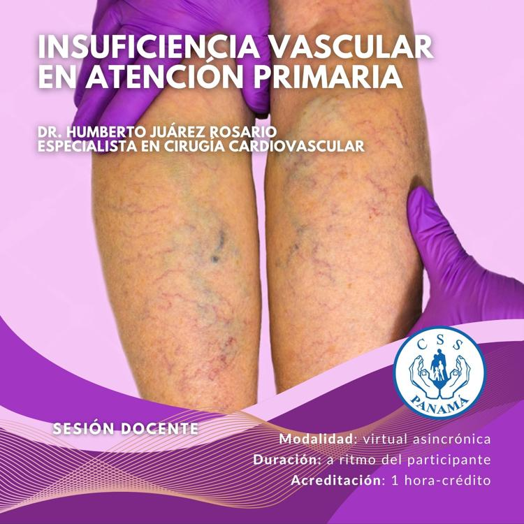

Mockup en mockups/. Cálculo efímero en el navegador, no se guarda nada. Marque todos los factores presentes.
Puntaje total
0 puntos · 0 factores
Nivel: —
Nivel de riesgo
Intervención sugerida
Marque los factores para orientar la intervención.
Ver protocolo institucional (ejemplo)/tablero/protocolos/<codigo>

Insuficiencia vascular en atención primaria
Profundice en prevención y manejo del riesgo trombótico en el primer nivel de atención.
Virtual asincrónica · 20 horas · DENADOI
Referencia y descargo
Modelo de Caprini (Caprini JA, Dis Mon 2005; actualizaciones 2010). Muestra educativa: no reemplaza el juicio clínico ni el protocolo CSS vigente. Validar dosis, contraindicaciones de sangrado y profilaxis extendida con el protocolo oficial.